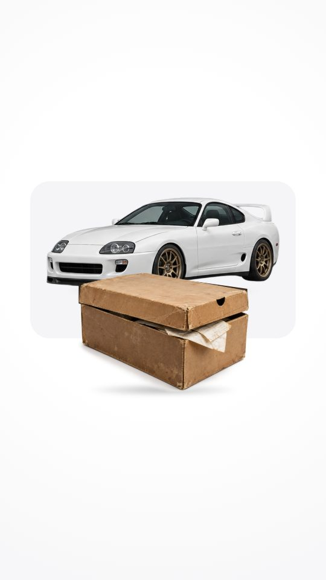
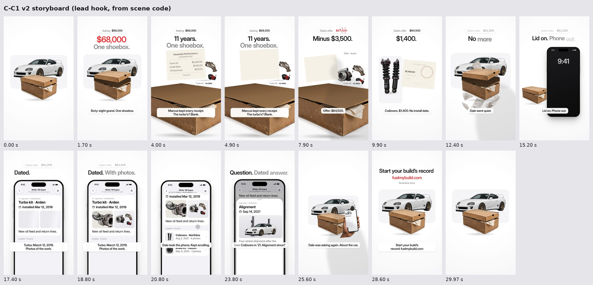
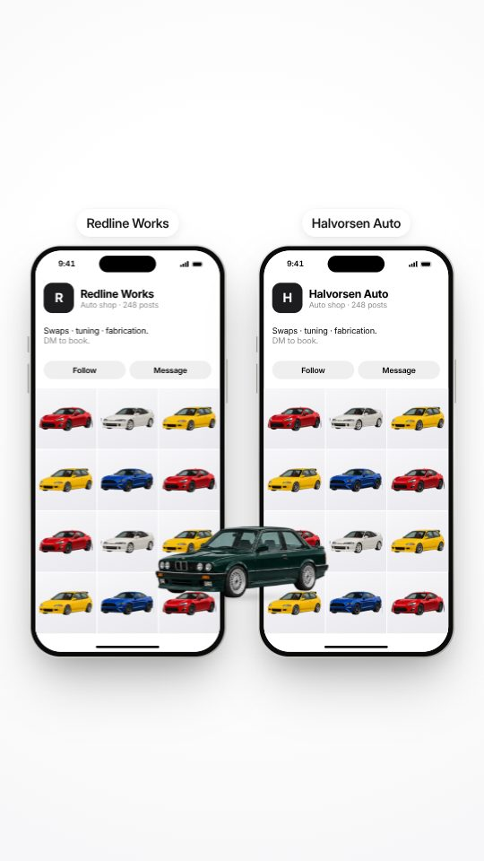
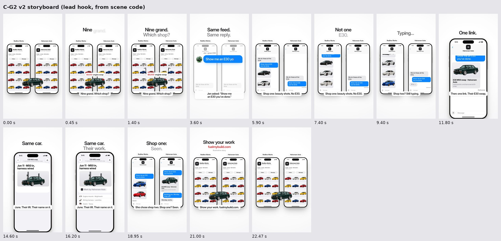
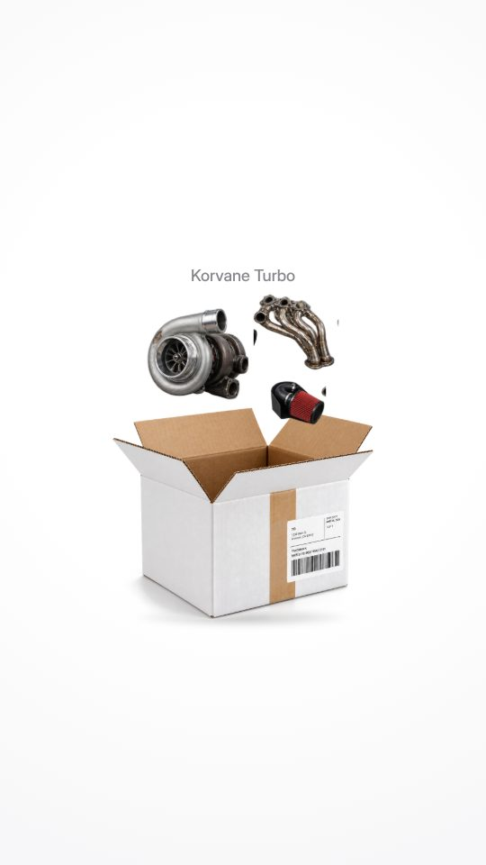
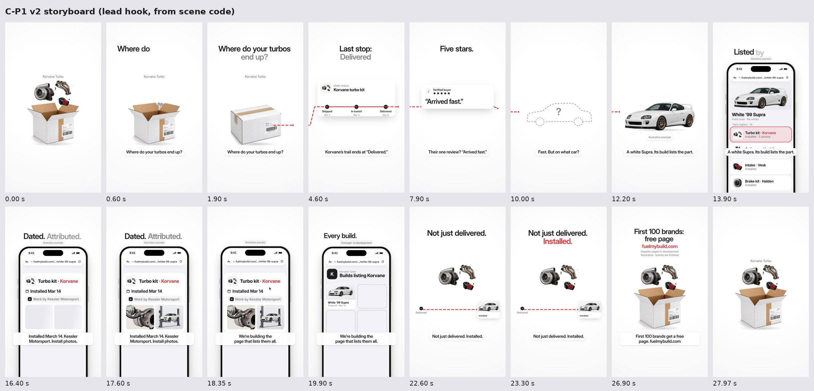

Key frames rendered from the real Remotion scene code (weeks/2026-W44/lab/C/film), lead hooks only, no VO (Wayne records it to vo-script.md). Subtitles show the VO windows. Phase 2 (build polish, sound design, mix, master, renders) waits for Wayne’s approval.

| t (s) | Voice (Wayne) | On screen | Motion | Sound (cue times, s) | remocn |
|---|---|---|---|---|---|
| 0–2.5 | Sixty-eight grand. One shoebox. | Frame 0: shoebox, lid closed, Supra on a soft tile. “Asking $68,000” chip at 0.1 s; red $68,000 on “grand”; lid lifts on “shoebox”. | Lid lift on a spring (light overshoot); slow camera push. | Chip pop 0.1; low hit + red number whoosh 0.62; cardboard lid lift 1.55. | rolling-number (chip), value-swap |
| 2.5–5.5 | Marcus kept every receipt. The turbo’s? Blank. | push-through into the open box. A thermal receipt rises toward the lens; print dissolves from the edges in; turbo kit slides in with a “Turbo kit · no date” chip. | push-through; receipt spring rise; edge-in dissolve mask on the print only. | Whoosh 2.5; paper rustle 2.75; slide 3.25; thermal hiss fade 3.4–4.8; soft “blank” tone 4.55. | push-through, typewriter-free fade |
| 5.5–8.5 | (Dale) That the turbo? / Offer: sixty-four five. | Dale’s shadow leans in, “Dale · buyer” label. Chip label swaps to “Dale’s offer”; rolls $68,000 → $64,500 in red; trim-burst on landing. | Shadow slide; value-swap; odometer per place. | Concrete scuff 5.5; label tick 5.6; odometer ticks 7.25–8.0; drop thud 7.9. | value-swap, rolling-number, trim-burst |
| 8.5–11.5 | Coilovers. Fourteen hundred. No install date. | whip-pan to the coilovers; coffee-ring receipt slaps down, only $1,400 readable. Chip → $61,000. | whip-pan; receipt land spring. | Whip 8.5; paper slap 8.95; ticks 10.2–10.9; drop thud 10.9. | whip-pan |
| 11.5–14 | Dale went quiet. | focus-pull to wide: receipts spill, chip dims grey, the shadow slides out. | Rack focus; slow pull back. | Music cut to dead silence 11.5; receipts flutter 11.6; concrete scuff 12.15; room tone only. | focus-pull |
| 14–16 | Lid on. Phone out. | Lid drops; the same spring drives the phone up from below (4-frame stagger), box slides aside. | One spring, two objects. | Cardboard thud 14.2; phone rise swish 14.33; tap/wake tick 15.8. | spring-settle feel (own) |
| 16–19.5 | Turbo: March twelfth, twenty nineteen. Photos of the work. | FMB turn. One legible entry: “Turbo kit · Arden”, “Installed Mar 12, 2019” (47 px), two install photos resolving from skeletons, one-line note. | push-through into the screen; skeleton → photo crossfades. | Push whoosh 16.0; UI pop 16.3; date tick 16.75; shutters 17.6, 17.75; music back in softly 16.0. | push-through, skeleton (new) |
| 19.5–22 | Dale took the phone. Kept scrolling. | Hand-off tilt; thumb scroll at readable speed; rows (Coilovers · Aug 3, 2021, Brake kit, Intake) settle in. Offer chip slides up and out. | Thumb touch, no cursor; chip exit ease. | Hand-off swish 19.5; chip exit whoosh 19.55; soft scroll ticks 20.35/20.95/21.55. | touch (own) |
| 22–24.5 | (Dale) Coilovers in ’21. Alignment since? | Marcus taps the row; the alignment sheet (Sep 14, 2021, car on lift photo) slides up and lands on “since”. | iOS 26 medium-detent sheet. | Tap 22.95; sheet whoosh 23.05; soft land pop 23.55. | drawer (new, rebuilt as iOS sheet) |
| 24.5–27 | Dale was asking again. About the car. | Cut wide: Supra on its tile, closed box, Dale’s hand holding the phone with the build page. | Hand springs in; camera at 0.86. | Music returns 24.5 (downbeat); hand swish 24.55. | — |
| 27–30 | Start your build’s record: fuelmybuild.com. | CTA over the story frame; hand exits; camera eases to the exact frame-0 framing. “Illustrative story” in grey. Text clears 29.6–29.93; last frame = frame 0. | Ease home; text fade. | Hand-out swish 27.0; URL pop 28.0; music resolves into the loop point. | — |
New remocn pieces vs the previous reel: skeleton, drawer (sheet), value-swap, caption-subtitle + caption-speaker (vs W42 C1: rolling-number, push-through, whip-pan, particle-dissolve, simulated-cursor)


| t (s) | Voice (Wayne) | On screen | Motion | Sound (cue times, s) | remocn |
|---|---|---|---|---|---|
| 0–1.8 | Nine grand. Which shop? | Frame 0: two identical grids, name chips, E30 on the seam. The E30 hops and lands; red “$9,000 engine swap” chip; two arrows flick to each phone. | Hop spring + squash; chip spring. | Hop whoosh 0.12; landing thud 0.42; chip pop 0.5; arrow flicks 1.12 (L/R). | — |
| 1.8–5 | Jen asked: ‘Show me an E30 you’ve done.’ | Both phones flip to DMs on one frame, both already showing “We do these all the time.” Jen’s question types once in the centre (red caret), splits and lands in both threads. | Mirrored rotateY flip; typewriter; split-and-fly. | Doubled flip 1.85 (L/R); key taps 2.45–4.25; doubled send whoosh 4.8. | typewriter |
| 5–8 | Shop one: beauty shots. No E30. | The crack at 5.3: left gets NSX/Corvette/Mustang photos; right freezes on “Delivered” with a 3-frame RGB glitch. | First asymmetric frame. | Glitch zap 5.3 (R); photo pings 5.3/5.75/6.2 (L). | rgb-glitch-text |
| 8–10.5 | Shop two? Still typing. | Right: typing dots pulse, stop, pulse. Left: two more photo pings, each a little louder. | Irregular dot rhythm. | Music drops to ticking pulse 8.1; pings 8.6/9.6 (L, rising level). | typing-indicator (new) |
| 10.5–13 | Then: one link. Their E30 swap. | whip-pan to shop two; link preview springs in: green E30, “E30 M50 swap · Halvorsen Auto”, fuelmybuild.com/halvorsen/e30-swap. | whip-pan; preview spring. | 0.3 s music out at 10.5; whip 10.5; link pop 10.95. | whip-pan |
| 13–16.5 | June. Their lift. Their name on it. | push-through to the build page: one legible entry “Jun 11 · M50 in, harness wired”, E30 on a two-post lift (skeleton → photo), neutral grey chip “Work by Halvorsen Auto”, three small grey part rows. No check stamp. | push-through; skeleton. | Push whoosh 13.0; shutter 14.35; soft chip pop 15.35; three row ticks 15.7+. | push-through, skeleton |
| 16.5–19.5 | She chose shop two. Shop one? Seen. | Split returns. Right: “Booking you. Monday drop-off?” / “Monday works.” Left: last photo, grey “Seen”. | zoom-blur return. | Zoom whoosh 16.5; send 16.95; receive 17.55; dry tick on “Seen” 18.85. | zoom-blur |
| 19.5–22.5 | Show your work. fuelmybuild.com. | Both threads flip back to grids on one frame; the E30 drops back onto the seam. CTA + “Illustrative story” over it; text clears 22.1; last frame = frame 0. | Mirrored flip; drop spring. | Doubled flip 19.65; E30 landing thud 20.05; URL pop 20.6. | — |
New remocn pieces vs the previous reel: typing-indicator, skeleton, zoom-blur, caption-subtitle (vs W42 G2: rolodex-flip, whip-pan, push-through, rgb-glitch-text, typewriter, imessage-chat-flow, simulated-cursor)


| t (s) | Voice (Wayne) | On screen | Motion | Sound (cue times, s) | remocn |
|---|---|---|---|---|---|
| 0–2.5 | Where do your turbos end up? | Frame 0: turbo kit hovering over an open box, grey “Korvane Turbo”. It drops in, the box snaps shut, the red dashed line draws out to the right. | Drop spring; box squash; line draw. | Drop whoosh 0.35; cardboard thud 0.68; flap snap + tape 0.85; marker draw 1.1–2.4. | — |
| 2.5–5.5 | Korvane’s trail ends at ‘Delivered.’ | Camera tracks the line to an iOS tracking card “Korvane turbo kit” (no order ID). Dots tick Shipped → In transit → Delivered; the line overruns into white. | Track pan with motion blur. | Pan whoosh 2.5; ticks 3.0/3.6/4.2; line draw continues 4.35–5.0. | — |
| 5.5–8.5 | Their one review? ‘Arrived fast.’ | Pan to a review card: five stars, “Arrived fast.” typed slowly; 0.5 s total stillness. | Typewriter (ink caret); hold. | Pan whoosh 5.5; key taps 6.85–7.65; silence hold 7.7–8.2. | typewriter |
| 8.5–11.5 | Fast. But on what car? | Pan to an empty dashed car-shaped slot with a grey “?”. The line stops at it. | Line ease-out stop. | Music drops to a single held note 8.75; line stop tick 9.3. | — |
| 11.5–14.5 | A white Supra. Its build lists the part. | FMB turn. Supra snaps into the slot (trim-burst), push-through into a Safari build page; “Turbo kit · Korvane” row lights red. “Illustrative example” tag. | Slot fill spring; push-through. | Landing hit 11.85 (music back in on the downbeat); push whoosh 12.55; highlight tick 13.7. | trim-burst (new), push-through |
| 14.5–18 | Installed March fourteenth. Kessler Motorsport. Install photos. | The row expands into one legible record: “Installed Mar 14”, grey “Work by Kessler Motorsport”, two install photos. No dyno, no numbers. | Expand; staggered reveals; skeletons. | Expand swish 14.55; date tick 14.95; chip pop 16.2; shutters 17.15/17.3. | skeleton |
| 18–21 | We’re building the page that lists them all. | Cursor taps “Korvane”; whip-pan to the supplier page mock “Builds listing Korvane”: Supra tile first, three empty dashed tiles. “Concept · in development” chip for the whole beat. No search step. | simulated-cursor click; whip-pan; tile springs. | Click 18.35; whip 18.6; tile pops 19.2/19.45/19.6/19.75. | simulated-cursor, whip-pan |
| 21–24 | Not just delivered. Installed. | Pull back: page shrinks away; turbo returns to the frame-0 spot; the line now runs from “Delivered” to an “Installed” Supra tile. | Reverse push; line draw. | Reverse whoosh 21.0; turbo settle 21.35; tile pop 21.65; marker draw 21.75. | — |
| 24–28 | First hundred brands get a free page. fuelmybuild.com (confirm) | CTA over the story frame; the line retracts, the open box slides back under the turbo = frame 0. Grey “Supplier pages in development / Illustrative · brands are fictional”. Text clears 27.6. | Box spring from below. | Retract zip 24.6; box thud 25.45; URL pop 26.45. | — |
New remocn pieces vs the previous reel: trim-burst, skeleton, simulated-cursor, typewriter, caption-subtitle (vs W42 P1: drawer, number-wheel, typewriter, simulated-cursor, push-through, whip-pan)

Original synthesized bed per the sound skill: C1 92 bpm F minor (warm Rhodes + upright-style bass, garage room tone under the body, dead silence 11.5–14.1, back in on the 24.5 downbeat); G2 104 bpm A minor (tight plucks, frame-locked doubled L/R SFX until 5.3 s, ticking pulse 8–10.5, 0.3 s silence before the link); P1 96 bpm D minor (single held note 8.75–11.85, drop back in on the Supra landing). Bed ducked about 7 dB under every VO window; masters at -14 LUFS, true peak ≤ -1 dBTP; plus a music+SFX stem. Every on-screen action in the tables above has its own sound on the same frame.
| id | prompt |
|---|---|
| shoebox-lid / shoebox-closed | Two cutouts of the same worn cardboard shoebox, studio product photo on pure white, 3/4 view matching img/obj/shoebox.png: (a) the box with its lid fully closed, no receipts sticking out; (b) the lid alone, same angle and lighting, transparent background. Lets the lid lift cleanly instead of the current polygon split. |
| receipt-thermal-blank | A single long thermal paper receipt, completely faded to blank except a faint header, slightly curled, studio photo on pure white, transparent background, top-down. |
| install-photo-supra-turbo | Engine bay of a white 1999 Toyota Supra with a freshly fitted turbo kit, shot from above at a workshop, natural light, no logos (used as an in-app install photo). |
| e30-on-lift | A green BMW E30 raised on a two-post lift in a clean workshop, three-quarter front, natural light, no logos (in-app install photo; replaces the lift + car composite). |
All image paths live in film/src/assets.ts, so a new PNG is a one-line swap.